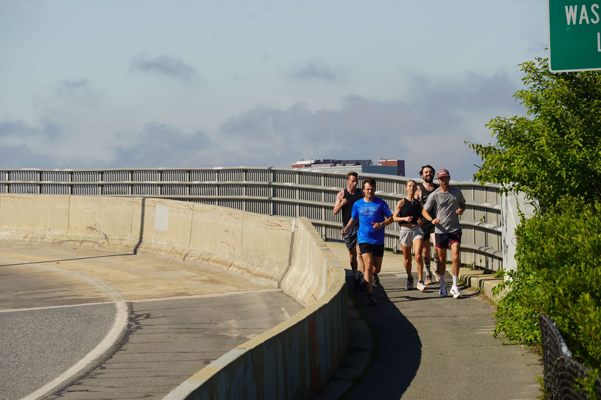
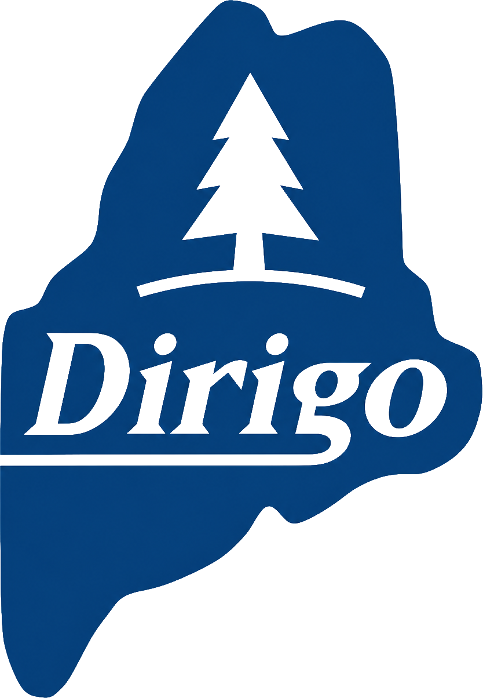
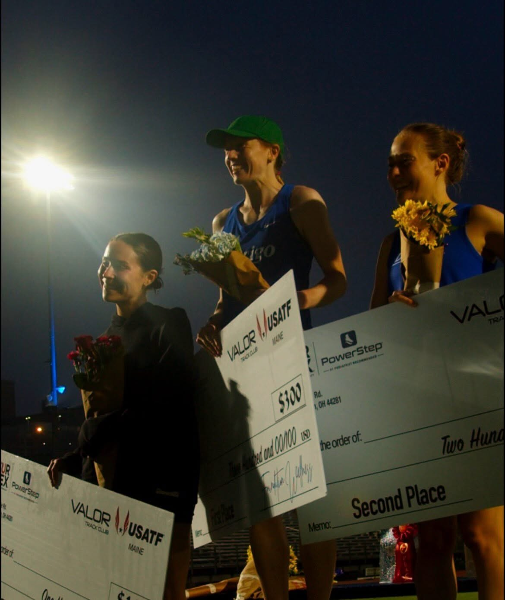
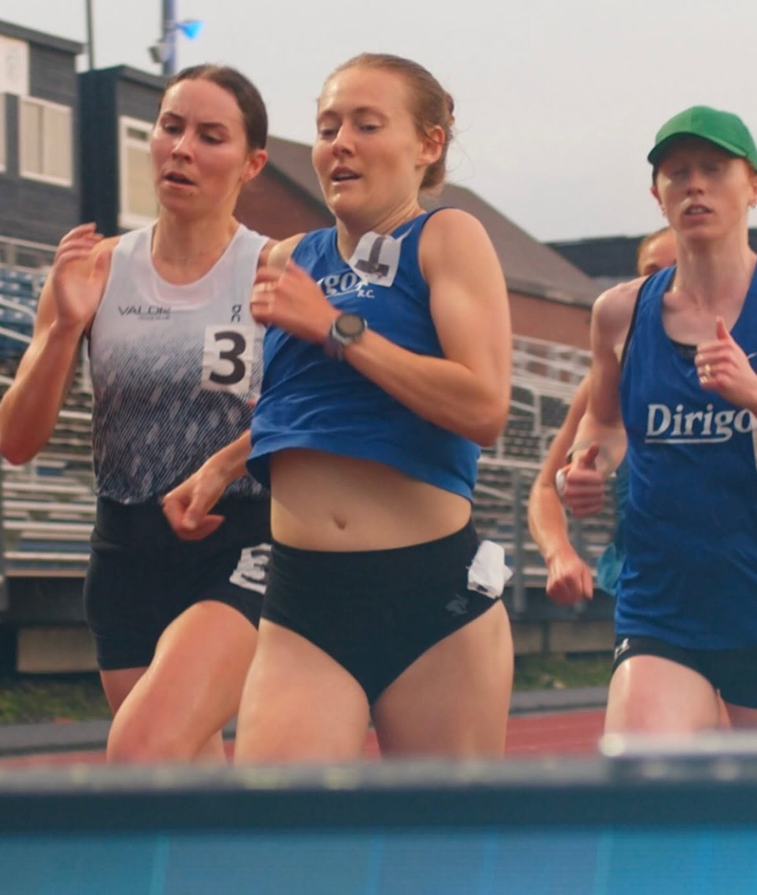
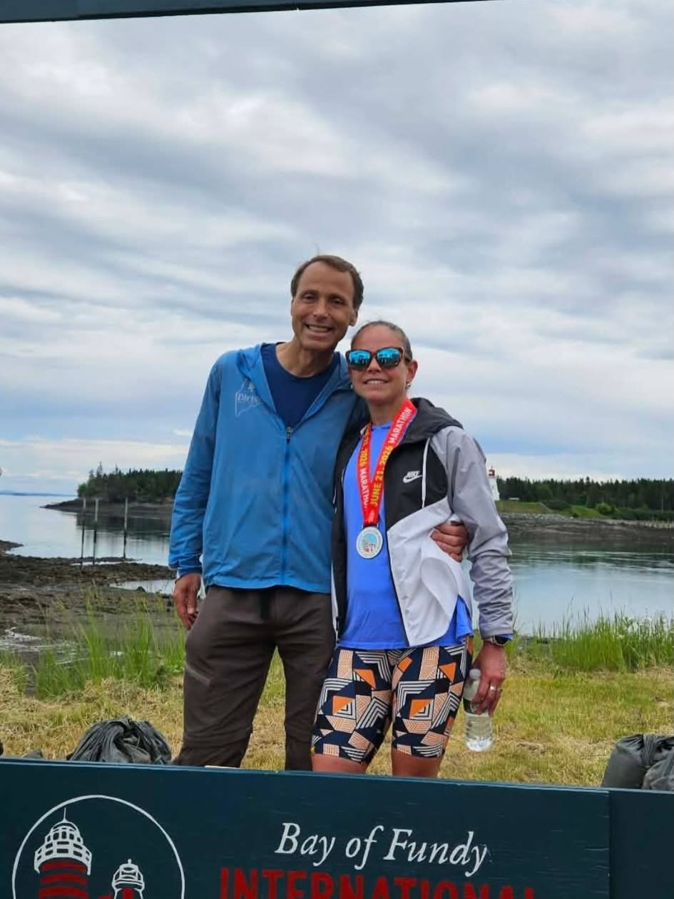

01
Race for Dirigo
Wear the blue singlet in Maine and across New England, from local roads to USATF team opportunities.
Team details
Photo by David Colby Young

Maine running club | Competitive since 2002
Dirigo brings Maine runners together for committed training, team racing, and representing the state well.
Founded in 2002, Dirigo is a Maine-based running club created to establish a competitive Maine racing team, foster personal achievement, and give runners opportunities to train and race together.
The club values commitment, teamwork, sportsmanship, and a strong connection to Maine. Membership has no time or age requirements; runners who want to contribute to the team are welcome to reach out.
01
Wear the blue singlet in Maine and across New England, from local roads to USATF team opportunities.
Team details02
Members coordinate long runs, workouts, daily miles, race plans, and results through team communications.
Training notes03
Dirigo works because members show up for teammates, race days, communications, and the Maine running community.
Join DirigoMembership is open to runners with a Maine connection who are committed to training, competition, teamwork, and good sportsmanship.
Send the membership form and the team can follow up with next steps, dues, singlet sizing, and team communications.
Start the formCoastal Run Maine helps keep Dirigo runners outfitted for the miles ahead. Members receive year-round discounts: 25% off shoes, 10% off fuel, and 10% off apparel.
Visit Coastal Run Maine
Dirigo has had a strong early-summer turnout at the Back Cove series. Members are also looking ahead to the next Valor Twilight Series meets on June 30 and July 18, plus the L/A Triple Crown races later this summer.


At Valor Track Club's first Twilight Series USATF meet at Fitzpatrick Stadium, Clíodhna O'Malley and Bethanie Brown finished 1-2 in the featured women's 5000m in 17:11 and 17:14. Veronica Graziano took 4th in 17:27, Taylor Bagley was 7th in 17:49, and Josie Spaulding was 9th in 18:51.

2:47:28 | 3rd overall | 50-59 win
Maine Running Hall of Famer Robert Ashby continues to show what world-class longevity looks like. Ashby ran 2:47:28 at the Bay of Fundy International Marathon, winning the 50-59 age group and placing third overall.
Dirigo members coordinate long runs, workouts, daily runs, race logistics, and results through team communications. After joining, members can connect with runners in their area and find the training rhythm that fits their goals.
Public event details and recurring run information will be posted here as they are ready for the full club and prospective members.
Join to connect